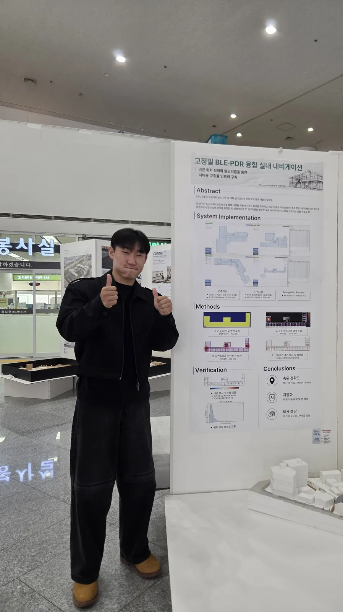
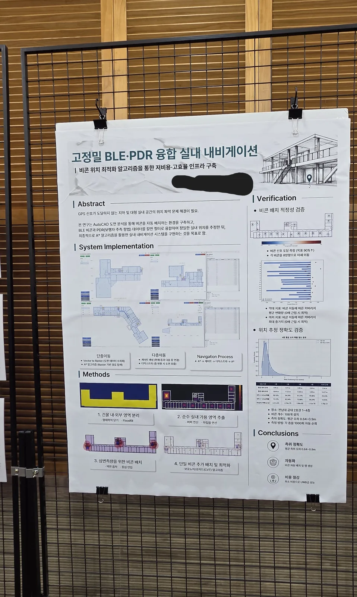
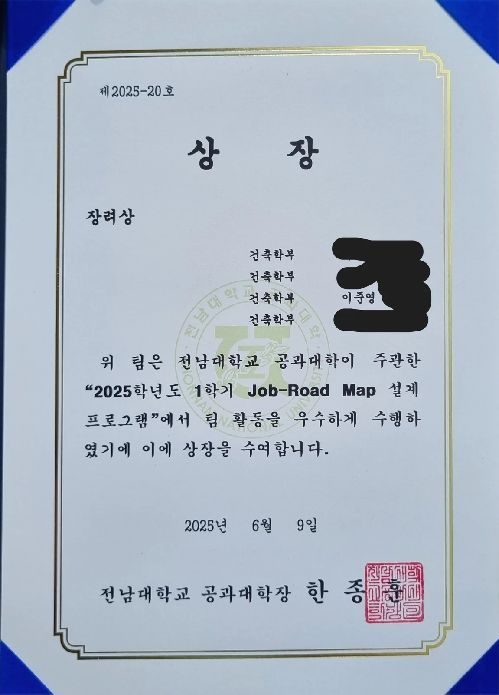

제23회 전남광주통합특별시 건축도시문화제 학생우수작품상
같은 작품 「고정밀 BLE·PDR 융합 실내 내비게이션」으로 제23회 전남광주통합특별시 건축도시문화제에서 학생우수작품상을 받았습니다.
연구 내용 보기 →
같은 작품 「고정밀 BLE·PDR 융합 실내 내비게이션」으로 제23회 전남광주통합특별시 건축도시문화제에서 학생우수작품상을 받았습니다.
연구 내용 보기 →
캡스톤 디자인 1에서 3인 팀으로 진행한 「고정밀 BLE·PDR 융합 실내 내비게이션」으로 2026년 건축학부 졸업작품전에서 우수상을 받았습니다.
연구 내용 보기 →
2025학년도 1학기 전남대학교 공과대학이 주관한 Job-Road Map 설계 프로그램에서 팀 활동을 우수하게 수행해 장려상을 받았습니다.
1학년 때 건축학부에서 열린 도시건축재생 경진대회에 참가했습니다. 건축 모형을 직접 만들어 제출했고, 우수상을 받았습니다.